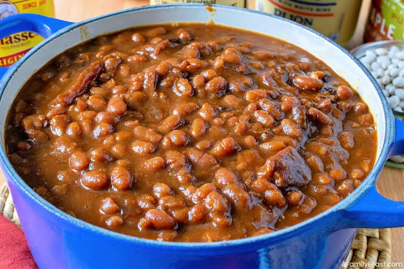

Beans Recipes
Home

Description
Beans are a nutritious and versatile ingredient that can be used in a variety of dishes.
They are a good source of protein, fiber, and essential nutrients.
Beans can be cooked in soups, stews, salads, or as a side dish.
Ingredients
- 1 cup dried beans
- 2 cups water
- 1 onion, diced
- 2 cloves garlic, minced
- 1 teaspoon cumin
- 1 teaspoon paprika
- Salt and pepper to taste
Steps
- Rinse the beans and soak them in water for at least 4 hours.
- Drain the beans and place them in a pot with fresh water.
- Add the onion, garlic, and spices to the pot.
- Cook the beans until they are tender, about 1-2 hours.
- Season with salt and pepper to taste.
- Add Palm-oil if desired.
- Serve the beans as a side dish or incorporate them into your favorite recipes.